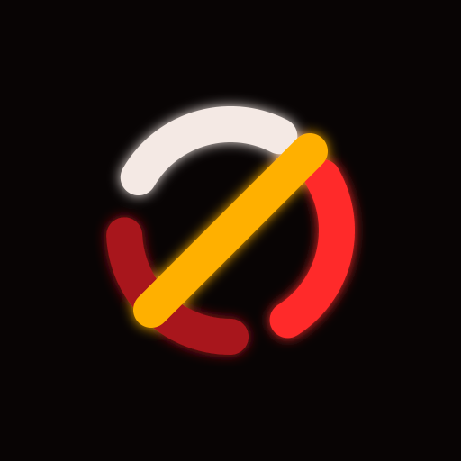

A workshop for Minecraft software.
Explore Relay and its documentation on GitHub →
Enable JavaScript to use this site’s project browser and search.
Search the workshop · Enter to open the first result